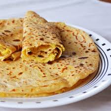

Polelu
<
Ingredients:
- Rice flour - 2 cups
- Urad dal (split black gram) - 1/2 cup (soaked)
- Jaggery - 1 cup (grated)
- Coconut - 1/2 cup (grated)
- Cardamom powder - 1 teaspoon
- Salt - a pinch
- Ghee - for frying
- Water - as required
 Recipe:
- Grind soaked urad dal into a coarse paste.
- In a mixing bowl, combine rice flour, ground urad dal paste, grated jaggery, grated coconut, cardamom powder, and a pinch of salt.
- Add water gradually and knead the mixture into a soft dough.
- Divide the dough into small portions and shape them into round balls.
- Heat ghee in a pan for frying.
- Flatten each ball into a disc shape and fry them in hot ghee until golden brown and crispy.
- Remove the fried Polelu from the ghee and drain excess oil on paper towels.
- Serve hot or at room temperature. Enjoy the delicious Polelu as a sweet snack!